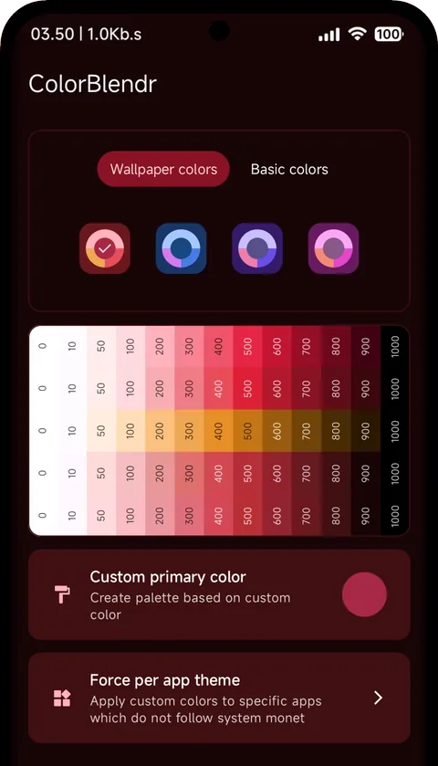
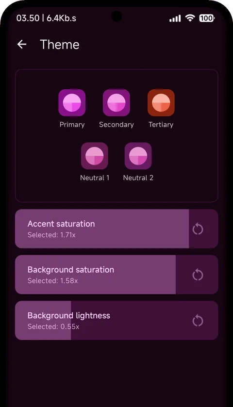
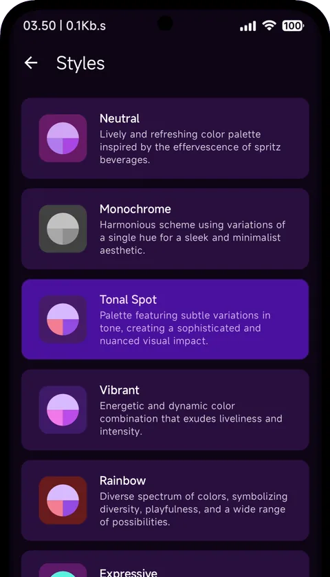
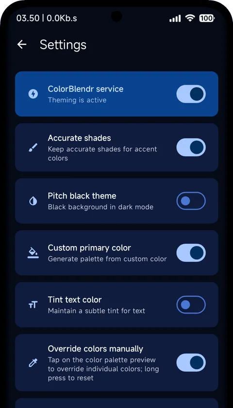

ColorBlendr
Customize Material You colors of your device. Pick a seed, tune saturation and lightness, override any shade. Applied system-wide at runtime, no reboot.
The phone, and every surface on this page, is painted by the seed you pick below.
This page runs the same engine
Every surface, button, and gradient here is derived on the fly with Material Color Utilities, the exact pipeline the app uses on your device. Pick a seed, a Monet style, and a color spec; the whole page re-derives.
What it does
Every pair below is the same screen twice: the palette Android ships with, and the palette the seed above is making right now.
Any seed, any source
Generate palettes from your wallpaper, pick from basic colors, or dial in an exact hex. Everything previews live before it touches the system.
Sliders that go further
Accent saturation, background saturation, and background lightness. 0 to 200%, per light and dark mode, in CAM16 color space.
Per-shade overrides
Press any of 55 palette slots and set it to whatever you want. The whole system follows, one shade at a time.
Every Monet style
Tonal Spot, Vibrant, Expressive, Rainbow, Fruit Salad, Monochrome and more, plus color spec 2021, 2025, or 2026 on supported builds.
Dark mode, properly
Pitch black backgrounds for AMOLED, tinted text color, and separate configurations for light and dark mode.
Backup and restore
Sliders, overrides, styles, everything you set up exports to a single file and comes back with one import.
What it looks like




Three ways in
Root
The full engine. Fabricated overlays register directly with the system's overlay service. Palette changes land instantly, no reboot.
- Per-shade overriding and sliders
- Pitch black, tinted text, per-app themes
- Community themes applied in one tap
Shizuku
No root required. A helper process at shell privilege writes the system's theme customization settings directly.
- Any seed color and Monet style
- Survives reboots
- Setup once per boot via the Shizuku app
Wireless ADB
The same shell-privilege path, negotiated on-device over the ADB TLS protocol. Pair once; no computer involved afterward.
- Identical capabilities to Shizuku mode
- Works where Shizuku isn't installed
- Requires Wi-Fi and developer options
Mode comparison
| Capability | Root | Shizuku | Wireless ADB |
|---|---|---|---|
| How colors apply | Fabricated overlays at runtime | Theme settings write | Theme settings write |
| Seed color and Monet styles | Yes | Yes | Yes |
| Live preview in app | Yes | Yes | Yes |
| Saturation / lightness sliders | Yes, 0 to 200% | No | No |
| Per-shade overrides | Yes, 55 slots | No | No |
| Pitch black, tinted text, accurate shades | Yes | No | No |
| Custom secondary / tertiary colors | Yes | No | No |
| Color spec version | 2021 / 2025 / 2026 | No | No |
| Per-app theming | Yes | No | No |
| Community themes | Browse, vote, apply | Browse and vote | Browse and vote |
| Setup | Grant root once | Start via Shizuku app each boot | Pair once over Wi-Fi |
| Survives reboot | Yes | Yes | Yes |
Made by the community
Browse, vote, and apply themes shared by other users, right inside the app. Hover a card; the page wears it. Tap a card to open it in the gallery.
FAQ
How does it work without root?
Shizuku and Wireless ADB modes run shell
commands that write the documented
theme_customization_overlay_packages
secure setting. Same mechanism the stock
wallpaper picker uses, with more of its fields
filled in.
How does it work with root?
Root mode uses the
FabricatedOverlay API to register
palette overlays with the system at runtime.
Nothing is written to the system partition;
removing a theme is the same operation as
applying one.
Why doesn't it fully work on OneUI?
OneUI system apps use Samsung's own palette instead of Material You. ColorBlendr's changes affect Google apps and everything else that honors Monet, but not OneUI's system UI.
Why are some features grayed out?
They either need a newer Android version or root. Sliders, per-shade overrides, pitch black, and applying community themes are root-mode features; a badge in the app tells you which is which.
Is sharing a theme anonymous?
Yes. No account, no sign-up, no personal data. Only the palette plus the name and description you type are submitted, and every submission passes a human review before it appears.
How do I uninstall it cleanly?
Disable the ColorBlendr service from the app's settings first, then uninstall and reboot. Your device returns to stock wallpaper-derived colors.
Make it yours
Free and open source, for any Android 12 or newer device. Root, Shizuku, or Wireless ADB, whichever you have.